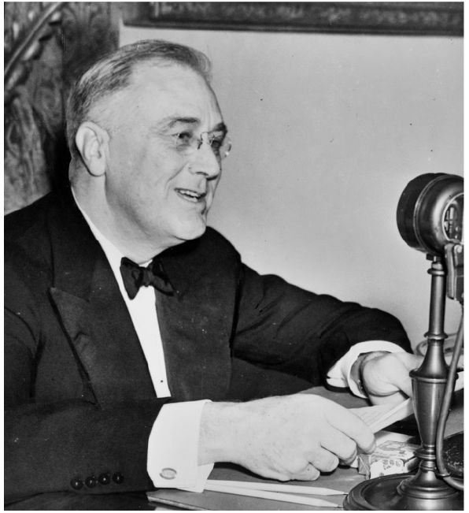

富兰克林·德拉诺·罗斯福于1933年3月4日第一次宣誓成为总统时，美国经济机制中的每个部件显然都已经无法正常运转了。银行、农场、工厂和商业贸易统统都已陷入困境。
罗斯福上台后，立刻开始着手整顿美国的金融业、农业和制造业，但他不那么关心海外经济事务。如同以赛亚·伯林事后所写的，罗斯福那“规模宏大的社会试验建立在无视外部世界的孤立主义基础之上”。罗斯福新政力图采用美国自己的方式来解决当时的危机，并防止未来的灾难。如伯林所言，“从某种程度上说，与外部世界保持尽可能少的联系，正是美国政治传统的一个部分” [142] 。
新政在实践中不断发展。罗斯福不问政策出处，只要措施确有成效就保留。事实上，恰是出于这种实用主义的考虑，罗斯福才将自己的行动计划命名为“新政”。在接受民主党总统候选人提名时，罗斯福发现“新政”这个概念颇能得到媒体的赞誉。 [143] “新政”宣告罗斯福将提供一个全新的起点，但并不包含任何具体的承诺：这个口号能够发挥作用，便被保留了下来。
新政伊始，罗斯福政府就着手振兴全国的货币和信贷系统，以迅速缓解美国人民当时所遭受的痛苦，而这也成了罗斯福新政中持续时间最长的成功措施。从新政开始实施的1933年，到美国开始进行战时生产动员的1940年，除去1937至1938年间的衰退外，美国经济的年均增长率高达八到十个百分点。同时，美国的失业率也从1932年极不合理的高位大幅回落。如果新政的目标仅仅在于消除大萧条的直接影响，那么随着旨在促进复苏和复胀的政策措施得以持续且高效地贯彻执行，新政确实算得上卓有成效，而这种成功在很大程度上得益于选民对罗斯福的支持。
新政始于拯救银行业。就任总统仅两天后，罗斯福就宣布全国所有银行必须停止黄金交易。实际上，这意味着命令银行歇业。罗斯福要求国会支持他的动议。国会同意了，于1933年3月9日通过了《紧急银行法》。该法案确认了罗斯福的行动，委任了一名有权在必要情况下重组银行的接管人。不仅如此，该法案还授权复兴金融公司购买银行股票，并在货币发行方面赋予了联邦储备系统更广泛的权力。这两项举措的目的，都在于能更为便利地动用资金。 [144] 三天后，罗斯福通过广播向全国人民进行了系列“炉边谈话”中的第一场，解释了银行如何运行、自己采取了哪些行动，告诉民众“我希望你们能从我对政府举措的简要叙述中了解到，新政的实施过程毫不复杂，也不极端” [145] 。第二天，3月13日，银行纷纷开张。最终，《紧急银行法》允许美国约一半银行无条件重新开张、四分之一银行在限制取款的前提下重新开张，对五分之一的银行进行重组，并要求其余大约1000家银行关门。 [146]

图4 1937年富兰克林·D.罗斯福坐在麦克风前进行一次“炉边谈话”
罗斯福先命令银行歇业整顿、再立法推进改革的做法，开启了新政期间反复出现的一种立法模式。总统会迅速采取行动，哪怕这些做法时有违宪之嫌。就整顿金融而言，罗斯福宣称他勒令银行歇业的依据在于第一次世界大战期间通过的《对敌贸易法》；然而，该法赋予总统的是战时权力，在其他情况下是否适用并不透明。 [147] 新政期间，国会会快速通过法案以配合罗斯福的行动，并且时常会在法案中加入一些超出罗斯福最初设想的措施——在整顿金融业的行动中，国会不仅修订了《对敌贸易法》，使之同样适用于和平时期的紧急状况，还借鉴先前的政府行动以及立法者们在胡佛执政期间深思熟虑过的一些措施，增立了与银行业相关的法案。之后，总统会把贵族口音和平实语言的魅力结合起来，向美国民众阐释法案措施。在整顿金融业的行动中，罗斯福只是简单告诉大家，“我国的银行业很是糟糕”。他不仅表现得平易近人，还会像老师一样对当前形势和他的政策做出深入浅出的解释，不遗余力地向人们阐明拯救银行业这一紧急事件中的技术细节以及他本人的应对。不管罗斯福的举措如何仓促，他的目标从根本上来讲是保守的。正如他的顾问雷蒙德·莫利后来所写的，通过勒令银行停业整顿，“资本主义在八天内得到了拯救” [148] 。至少，资本主义部分地得到了拯救。这样的成就让美国民众看到了逐步改善境况、渡过危机的可能性，为政府赢得了一定的公信力，或许也为美国经济体系的进一步持续改革赢得了回旋余地。
三个月后，1933年《银行法》开启了改革的序幕，这部法案的出台与罗斯福几乎毫无关系。该法案增强了联邦储备委员会管制银行业的权力，将受理公众存款人业务的商业银行与在华尔街进行投资的投资银行分开，并设立了一个与罗斯福最初判断相悖的临时性机构：联邦存款保险公司。该公司使联邦政府得以为普通美国民众的存款进行担保。罗斯福总统担心政府某天可能不得不支付巨款来为倒闭的银行买单，但还是接受了这个计划。事实证明这一决定是明智的：有了联邦存款保险公司，银行的倒闭规模降低了整整一个数量级。 [149] 1935年，国会给联邦存款保险公司颁发了永久的许可证。
银行业改革体现出的保守倾向以及捍卫资本主义制度的决心，贯穿了此后阶段更为宏大的新政历程。自始至终，富兰克林·罗斯福一直强调他在经济上循规蹈矩。在广播讲话中，他解释说，美国联邦储备委员会现在能够发行更多货币，这些货币的背后会有充足的准备金。“这些货币不是空头钞票。”罗斯福宣称。然而，尽管向选民甚至自己保证将在面对货币问题时稳健行事，他的实际作为却与这种保证背道而驰。
从1890年代开始，民主党首次不再坚持倾向于限制政府规模的传统立场。在威廉·詹宁斯·布莱恩的带领下，民主党开始站在普通百姓的立场上，反对大型制造企业。自那时起，民主党人还对不受联邦竞选财务法律约束的“软性捐款”情有独钟。布莱恩站在农民和工人的立场上反对金本位制——坚持金本位正在导致农产品价格不断下跌。布莱恩认为，国家应该铸造银币来替代金币，以通货膨胀——更准确地说是通货复胀——缓解价格下行的压力。40年过去了，情况看起来和当初差不多。罗斯福不仅依赖来自农民的选票，还像布莱恩以及许多（甚至是大多数）美国人一样眷念这个国家早已消失的家庭农场。他希望救济那些失去家庭农场的美国人，就像布莱恩曾提出的：在流通中投放更多的货币，提高农产品的价格，延长农场主们偿还债务的期限。罗斯福在1933年1月说道：“如果不能遏制商品价格的下滑趋势，我们可能会被迫面对通货膨胀。这可能需要使用银作为本币，也可能需要降低美元与黄金的兑换比率。我尚未决定如何以最好、最安全的方式完成这次通货膨胀。” [150]
当时，美元和世界上其他的主要货币一样，是和黄金挂钩的。为了实现通货膨胀，罗斯福将不得不削弱美元与黄金的联系。在金本位制下，各国理论上都同意根据自己的黄金储备来确定允许流通的货币量，从而使它们所发行的货币能自由兑换黄金。如果一个国家的黄金储备下降——也许因其债权人要求还款——该国就不得不动用自己的中央银行来减少本国经济中的货币供应量，以免货币贬值。早在1929年，随着美国海外借贷的减少以及保护性关税的增加，一些拉丁美洲国家和欧洲国家便难以满足按黄金供应比例保持本国货币数量的要求。1931年，奥地利的一家主要银行——联合信贷银行宣告破产，在全球范围内引发了兑现黄金的风潮，波及世界金融之都伦敦。到了当年9月，英国不得不放弃金本位制。对于那些曾认为大英帝国坚不可摧、金本位是帝国定海神针的银行家、政客以及其他人来说，这个抛弃金本位制的举动看起来实在可怕。
面对这场危机，美国联邦储备系统通过加息来缓解黄金外流的压力。对投资者而言，更高的利率意味着两点：第一，他们可以在美国得到更高的回报，所以可以把钱留在美国；第二，美联储意在通过抬高贷款成本来减少货币流通量，从而维护美元与黄金的自由兑换。 [151] 这一策略虽然令金本位制的支持者们感到满意，却在许多美国人迫切需要廉价货币的时候，让货币变得更加昂贵。本来，如果钱能来得更容易，就会催生更多借贷、更多投资和更多就业机会。但是，美联储的银行家们却选择了金本位制来缓解国内困境。胡佛与法国总理皮埃尔·赖伐尔联合声明表示支持金本位制，美国央行官员也与他们的法国同行立场相同，后者“认为确保货币能与黄金自由兑换，并非抱守日趋过时的陈规旧俗，而是为维护金融市场纪律所必须采取的措施。我们认为，金本位制是合同安全和商贸道德的唯一有效保障”。 [152]
1933年《紧急银行法》只是暂时切断了美元与黄金的紧密联系。但是，到了4月，罗斯福就颁布行政令，禁止美国人持有大量黄金，并要求他们把手头的黄金交到联邦储备银行以换取其他货币。几周后，总统解释了采取这项措施的原因。据《纽约时报》报道：“他预见到……会出现一种情况，即国会中的激进分子……可能……通过某项革命性法案”——或许是铸造银币。为防止这类激进的举措，罗斯福承认“某种类型的通货膨胀可能是有益的”，并认为由他自己而非国会来引发通货膨胀可能更好。 [153] 随着美元与黄金暂时脱钩，一项全新的政策似乎清晰地浮出了水面。根据针对5月12日《农业调整法》的《托马斯修正案》，国会同意授权总统设定黄金与美元的固定兑换比例。
美元兑换黄金的价格，从之前的20.67美元每盎司上升到30美元每盎司。夏末，罗斯福就开始通过复兴金融公司以稳步走高的价格购入黄金。在一次“炉边谈话”中，他声明：“我之所以要这么做，是为了确立并维持对局面的持续掌控。这是一项政策，不是权宜之计！……这样我们才能采取进一步的措施，实现货币的可控性。” [154] 1934年1月，国会通过了《黄金储备法》，通过这项法案，罗斯福将黄金的价格固定在35美元每盎司，并取得了全国货币性黄金的所有权。 [155]
当时社会上普遍认为，银行和券商引发经济崩溃的原因，在于赋予了罗斯福和他所委任的官员在操纵货币和银行业方面过大的自由裁量权；如果这种自由裁量权被滥用，可能会破坏金融业和美国经济。新政时期的各届国会对此采取了行动。除《紧急银行法》和《托马斯修正案》外，国会还于1934年通过了《证券交易法》，据此设立的证券交易委员会被赋予了广泛的权力，通过防止交易员滥用内幕消息来监管华尔街。 [156] 1935年《银行法》规定美国联邦储备系统由总统提名委员会，而非由该系统内部的银行家们掌控。 [157] 罗斯福审慎用权、悉心用人，设法避免了部分来自商界的潜在责难。他通过任命老牌交易员约瑟夫·肯尼迪为证券交易委员会的首任主席，使紧张的银行家们放下了悬着的心。此后几年内，在所有新政监管机构中，只有证券交易委员会在企业家中获得了高于50%的支持率。 [158]
罗斯福之所以能够行使广泛的新权力，除了受益于他的政治判断，也得益于幸运之神的垂青。在美元贬值的同时，农产品——尤其是棉花和谷物——价格上涨，减轻了农民还贷的困难。 [159] 也许更为重要的是，海外投资者开始抛售黄金以换取美元，从而使黄金开始流入美国。美国在诸国中一直享有与众不同的地位：它既通过经济和文化纽带与欧洲牢靠地联系在一起，又在地理上和政治上与欧洲截然不同。随着欧洲政局动荡、战争的凶兆逐渐变成现实，美国开始从这种独特的地位中受益：在整个1930年代，流入美国的黄金越来越多。这些黄金为美国的银行创造出了更加稳定的业务环境，也增加了美国经济的货币供给。银行开始调低贷款利率，使商人们得以考虑通过借贷为企业那些能够创造就业的项目注入资金。这可以解释为什么美国的失业率在罗斯福执政期间出现了下降。 [160]
罗斯福政府在重振美国银行业方面所做的，要比前任政府更多，他们的努力也取得了显著的成功。但是，无论罗斯福通过广播把新政在金融方面的政策解释得多么简单明了，这些政策所处理的问题，还是远远超出了普通美国人的经验范畴。新政后期的一些立法，在推动联邦政府支持公民投资方面发挥了更大作用——这些立法使联邦政府得以为抵押贷款提供保险，并能够通过与专门的农业机构合作来确保农民的信贷安全。但是，在1933年，罗斯福麾下的政策制定者们发现：他们必须找到比挽救银行和稳定信贷更直接、更迅速的方式，来接触普通美国民众。在罗斯福执政期间，美国联邦政府首次开始对全国失业人员提供大量的直接救济。这些救助措施并非按照某张蓝图制定出来，而是一次次政治妥协零碎造就出的，并且随着时间发展而产生了显著的变化。胡佛执政的最后一年启动了一项联邦救助计划，但步伐既小又慢：1932年《紧急救济与工程建设法》允许复兴金融公司贷款不超过三亿美元供各州政府展开救济。但该计划提供的是贷款而非拨款，并且需要通过既有的州级官僚机构发放，所以成效有限，在提升胡佛公共形象方面显然为时过晚。 [161]
新政早期，国会议员们没费什么周折，就将年轻失业男性确定为了特别关注对象。和那些处于职业巅峰期的员工相比，年轻员工在技术和经验方面都处于劣势，因而更容易失业。然而，他们的青春也意味着巨大的潜力。按照那个时代的标准，年轻男性注定要在未来成为一家之主和经济支柱。如果没有人尽快向他们施以援手，这些失业的年轻男性很可能会离开自己生活的社区，成为流浪汉或者无业游民，对社会秩序构成威胁。
因此，1933年3月31日，在罗斯福政府执政的第一个月内，国会就创建了平民保育团，初衷是为18至35周岁（包括35周岁）的男子提供工作。如果一位年轻男性未婚、健康、失业、具有美国国籍，并且来自接受救济的家庭，他就可以加入平民保育团，前往由美国陆军部组织运作的某处乡村营地，并将大部分工钱寄给家人。美国农业部和内政部列出了保育全国农作物和森林的工作清单，包括防治水患和森林火灾、根除虫害、修筑公路、架设桥梁、建造围栏和开辟防火带等。全美几十万青年男性就这样从失业人口名单中被剔除出去了。他们在士兵们的监督下，在约2500个营地中工作。那些问题似乎由此得到了解决。 [162]
美国人也许曾对平民保育团的半军事性质有所顾虑，也曾担心政府开办的营地可能会给这个国家的年轻人洗脑。但是，男孩们在平民保育团中所从事的一般都是短期工作——工作期限最初只有六个月，后经立法限定为两年。这项救济计划虽然规模较小，但特别有针对性。人们普遍认为值得动用政府资源来帮助青年男性，所以相比其他新政救济计划，平民保育团受到的批判并不多。 [163]
5月，国会通过《联邦紧急救济法》，创立了联邦紧急救援署，从复兴金融公司的资金里再划出五亿美元，以拨款而非贷款的形式向各州提供援助。其中一半款项根据各州自身的开销发放，另一半则由联邦紧急救援署的管理者酌情处理。罗斯福任命哈里·霍普金斯来领导联邦紧急救援署。霍普金斯是个骨瘦如柴、烟不离手的社会工作者。早在罗斯福担任纽约州州长的时候，他就曾负责纽约州的救援工作。接受任命后，霍普金斯在联邦紧急救援署的办公室走廊里架起桌子，开始向各州拨款。 [164]
6月，国会拨款33亿美元作为公共工程管理局的启动资金。由于1933年美国的国内生产总值只有564亿美元，这笔拨款一下占到了当年美国经济总量的5.9%，非同寻常。 [165] 罗斯福任命内政部长哈罗德·伊克斯为公共工程管理局的负责人。伊克斯是一名来自芝加哥的共和党人。他在使用手中丰富的资源时非常谨慎，时常将公共工程管理局仅视作为地方政府服务的金融机构。如果希望获得伊克斯的慷慨批款，地方政府就必须对申报的重大项目进行设计和审批，并将其中大部分拨款用于重大项目。
由于伊克斯谨小慎微，霍普金斯可以支配的预算又相对较少，早期的救济工作虽然登上了报刊头条，对解决失业问题却几乎毫无成效。看着国家在大萧条中走向另一个冬季，霍普金斯敦促罗斯福成立一个新机构，一个能让他绕过州政府官员直接雇用劳动力的机构。罗斯福满足了他的请求，成立了土木工程署，命令霍普金斯在1934年1月前雇用400万美国人。霍普金斯做到了。霍普金斯明白美国人对公共救济的态度，他通过土木工程署向受助者提供工作而非直接施舍，保护了受助者的尊严。不久，这些工人们开始为修缮市政厅、码头和公路而忙碌起来，所有人的工资都由联邦政府支付。
除公共工程管理局、联邦紧急救援署、平民保育团、土木工程署、复兴金融公司外，新政还催生出了其他许多关联机构。如果说对于大萧条之后的几代美国人而言，上述官僚机构的名称不过是一堆难分彼此、令人费解的字母缩写，1930年代的美国人却有理由分清这些机构。他们知道，复兴金融公司是胡佛的银行储蓄机构（新政时期建立的许多机构都会从它的锅里分一杯羹），平民保育团招收他们的儿子和兄弟去保护美国的土地，公共工程管理局将在不久之后修建起学校、医院、桥梁、港口、长堤或机场（尽管这些项目在当时尚未开工），土木工程署则帮助他们挨过了1933和1934年之交那个有史以来最冷的严冬。 [166]
同样，事后看来，国会为各种各样新政计划所拨出的款项，在财政赤字的汪洋大海中，都像是或大或小的一滴水珠。1932年，联邦政府的支出大概只有州政府和地方政府的一半。但是，到第二次世界大战前夕，新政就使得联邦政府开支增加了一倍有余。在此过程中，所有政客——特别是总统——也为自己数以十亿计地增加联邦预算而忧心忡忡。 [167]
上述原因在一定程度上导致了土木工程署的夭折。不仅是土木工程署的巨大开销，甚至美国民众对该机构的感激之情都让罗斯福神经紧张。他既不想让政府入不敷出，也不希望让美国民众直接依赖联邦政府获得救济项目。罗斯福态度暧昧，他一方面承认有必要建立一个覆盖全国的救济项目，但又不希望该项目“成为我们国家的惯习”。入春前，他就已下令霍普金斯解雇土木工程署所雇用的400万工人，一厢情愿地希望这项短命的计划已经给民生注入了足够的推力。 [168] 为防止过多人口一下子拥入劳动力市场，土木工程署将雇员分阶段错峰遣散。尽管如此，还是有不少人写信哀求霍普金斯，祈求他“以某种方式提供一份工作，无论地点和工种”。管理人员也抱怨，认为公共工程半途而废还不如不要发起。 [169]
罗斯福虽然担心，但与直接发钱相比，他还是更倾向于以工代赈。因此，当大萧条在1934年底尚未出现好转的迹象时，罗斯福政府便开始着手设计新的以工代赈方案。生活在1930年代的美国人都知道，以工代赈的成本要高于直接救济。毕竟，只是把钱交给穷人，要比设立一个官僚机构去规划项目再雇用穷人更便宜。但是，自尊心和道德感驱使美国人宁愿选择成本更高的路；这样，即便他们身处绝境，也能从有意义的工作中获得尊严。
1935年春，新的联邦《紧急救济拨款法》出台，该法案给予总统近50亿美元用于开展各项救济计划，包括修建高速公路、养护环境、兴修水利设施、推进电气化、建设住房、维护公共卫生、再造森林、防控洪灾等，涵盖了几乎所有能够想到的对公众有益的项目。 [170] 罗斯福利用该法案设立了公共事业振兴署，该机构脱胎自联邦紧急救援署，成为霍普金斯新的工作重点。新政政府通过公共事业振兴署直接而全面地投入到雇用美国人以工代赈的计划中，以期结束大萧条。公共工程管理局和联邦紧急救援署主要按已有的美国联邦结构行事，将国库的款项层层划拨给州政府和地方政府；与此不同，公共事业振兴署像短命的土木工程署那样直接赈济民众，并将这种经验发扬光大——这成了新政政府一个持续而重要的特征。
通过公共事业振兴署，霍普金斯又一次雇用了数百万人，并安排他们建设医院、学校、操场和机场。该署也雇用艺术家、作家和演员从事他们的本职工作。在公共事业振兴署的推动下，一些道路和公共住房得以建成。但批评也接踵而至，说该署花费公款雇用了一批游手好闲之徒去从事一些没用的工作，还做得很糟糕。受制于公共事业振兴署的目的和结构，这些抱怨不仅难以避免，往往还有一定道理。罗斯福为了尽可能地降低失业率，有意让公共事业振兴署在尽可能短的时间内雇用尽可能多的人。为了真正降低失业率，公共事业振兴署不能开展那些私人企业或地方政府已在实施的项目；否则，联邦政府通过公共事业振兴署所提供的工作岗位，就只能挤占社会上已有的工作岗位，却无法降低失业率。如此一来，公共事业振兴署所能提供的活计，在通常情况下往往不会被视为正经工作，这些岗位要么是因人设事，要么旨在建造华而不实的样子工程——换个不那么刻薄的说法，无非是文明社会提供的安慰。
更重要的是，至少在某种程度上，公共事业振兴署提供了滋生政治腐败的土壤。霍普金斯有权向地方官员拨款。过去，这些市长们为了获得经费上的支持，常常不得不去乞求那些对他们漠不关心甚至充满敌意的州议员。现在，一位身处首都华盛顿而又手握重金的大员，却希望和他们建立起友好关系。那些管理着庞大投票人口的大城市市长，尤其容易吸引公共事业振兴署的关注。
人们担心公共事业振兴署可能被政治家们操纵。就此，国会为该署划定的活动范围越来越窄。国会划定的这些界限本身，就显示出该署究竟哪里让人感到担心或受到冒犯。从1936年起，非法移民不能再从事公共事业振兴署所提供的工作。从1937年起，公共事业振兴署的雇员必须接受私人部门提供的就业机会，否则就会被开除。从1938年起，公共事业振兴署的雇员在本职工作之外如有其他收入，必须提供那些收入的季度报告；在招聘时，公共事业振兴署必须优先考虑退伍老兵，其次是美国公民，然后是那些有意成为美国公民的移民，其他移民则不得提出申请。从1939年起，公共事业振兴署的工作期限被确定为仅18个月，期满后除非经重新审核确有必要才会续用；此外，该署仅能招募美国公民工作。 [171]
在国会试图阻止公共事业振兴署成为政治工具的同时，针对该署项目的批评也被证明站不住脚。一些公共工程乍看起来可能华而不实，最终却能派上用场。比如，田纳西州的孟菲斯市花费2.5万美元修建了流浪狗收留所，大大减少了城市中狗咬人的事件，降低了狂犬病患者的数量。 [172] 公共事业振兴署的每个项目，在当地社区都很受欢迎，而这样的项目有许许多多。
总的来说，公共事业振兴署体现了收入所承载的一些新的社会意义。它界定了“安全工资”的概念。这种工资往往只能在最低限度上满足人的需要，但还是要高于私人雇主愿意支付的额度；而对于那些习惯了季节性或周期性失业的人们来说，有规律地获得收入，更是一种前所未有的体验。此后，享有一定程度的职业保障和最低标准的生活，成为美国人尊严的重要组成部分，“安全工资”则为这一曾经不被视为正统的理念增加了合法性。公共事业振兴署的“安全工资”暗示，美国人所挣的工资理应高于基本的生存需要，应当足以让他们感到骄傲并免于依附雇主。 [173]
1939年，美国公共舆论研究所开展的一项民意调查发现，当被问及“罗斯福政府做过的最糟糕的事情是什么”时，有23%的美国人选择了“救济计划和公共事业振兴署”，使之成为最不受欢迎的新政措施。考虑到美国人对在联邦层面开展救济以及对该计划存在被政治滥用的可能性抱有偏见，上述结果并不令人吃惊。同一份民调还发现，当被问及“罗斯福政府最大的成就是什么”时，有28％的美国人选择了“救济计划和公共事业振兴署”，使其成为最受欢迎的新政措施。考虑到救济项目的多种多样以及在各地广受欢迎的程度，这也毫不奇怪。在新政的这个核心问题上，民主党人享有5%的净支持率，这足以让他们在政治上占得先机。 [174]
罗斯福政府的救济措施见效甚快，它不仅让美国人有钱可花，还让他们重新认为自己是体面的、富有生产力的公民。而通货复胀的影响则更为长远，私营经济悄然开始重建。通过这两项政策，罗斯福政府或许具备了足够的战略能力来对抗大萧条；但是，要想真正把国家拉出经济的泥沼，还需要更有力地贯彻执行上述政策。然而，对于新政的决策者而言，他们的雄心不止于终结危机，还希望确保大萧条不会卷土重来。为了实现这个目标，他们期望永久变革美国的政治经济。